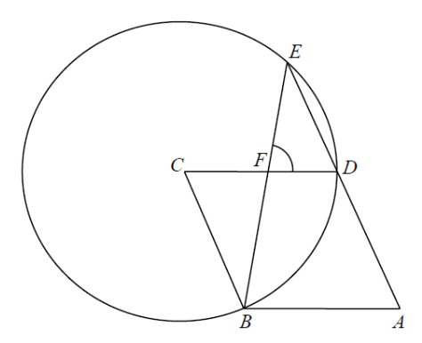

幾何 · 菱形與圓

$B$、$D$、$E$ 都在圓上，故 $CB=CD=CE$。又 $ABCD$ 是菱形，$CB=CD=AB=AD$，所以 $CB=CD=CE$。
因為 $ADE$ 是直線，$\angle CDE=180^{\circ}-\angle ADC=180^{\circ}-118^{\circ}=62^{\circ}$。
故 $\angle CED=62^{\circ}$，而
$$\angle DCE=180^{\circ}-62^{\circ}-62^{\circ}=56^{\circ}$$
$$\angle BCE=\angle BCD+\angle DCE=62^{\circ}+56^{\circ}=118^{\circ}$$
$CB=CE$，故 $\angle CEB=\angle CBE=\dfrac{180^{\circ}-118^{\circ}}{2}=31^{\circ}$。
在 $\triangle CEF$ 中：$\angle CEF=31^{\circ}$（$E$、$F$、$B$ 共線）、$\angle ECF=\angle ECD=56^{\circ}$，故
$$\angle CFE=180^{\circ}-31^{\circ}-56^{\circ}=93^{\circ}$$
$$\therefore\ \angle DFE=180^{\circ}-93^{\circ}=87^{\circ}$$
答案為 D。